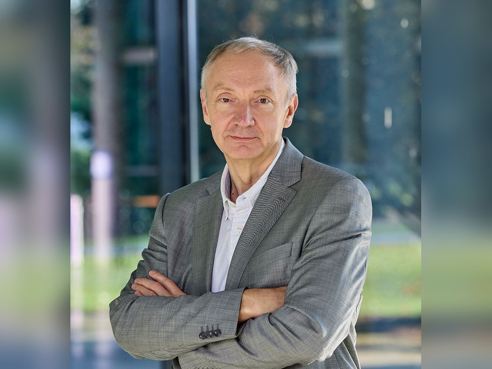

Александр Тормасов
Профессор Constructor University Bremen, Chief Research Officer Constructor Tech
Отрывок главы →

01О герое
Экс-ректор Университета Иннополис, человек, которого звали в проект до его появления. О том, как создавался университет в чистом поле, воспитании без запретов и о том, чему нас учат языковые модели.
02Ключевые тезисы
- Наука и инновации — разные процессы, но их нужно связывать.
- Новые задачи иногда требуют новых институтов и новых сред.
- ИИ усиливает человека только при наличии критического мышления.
- Знать не равно понимать: инструмент нужно проверять.
- Команда должна удерживать и быстрый результат, и долгую стратегию.
03Возьми с собой
Что применить
Не бойся начинать с нуля, если старая система не подходит под новую задачу.
Разбирайся руками: пробуй, кодируй, проверяй, ломай и пересобирай.
Технологии будущего появятся на стыке ИИ, робототехники, вычислений и физического мира.
Заметка автора
Из этого разговора особенно хочется сохранить три вещи: новое иногда действительно проще строить с нуля; ИИ не заменяет критическое мышление; а путь от науки к инновации требует отдельной системы, а не только сильной идеи.
Цитаты
Наука деньги тратит. Инновации деньги приносят.
— Александр Тормасов
Иногда новое проще строить с нуля, чем перестраивать старое.
— Александр Тормасов
Если слишком внимательно слушать чужое мнение, можно вообще ничего не начать.
— Александр Тормасов